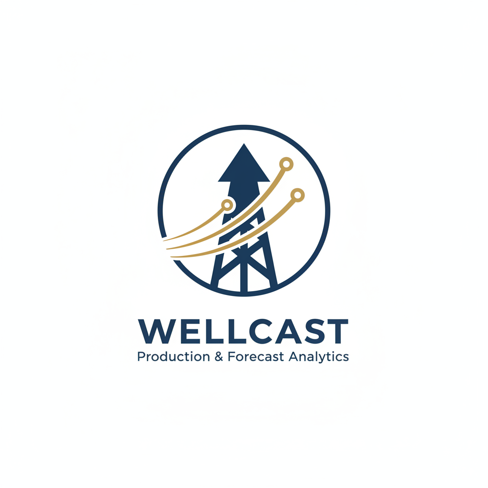
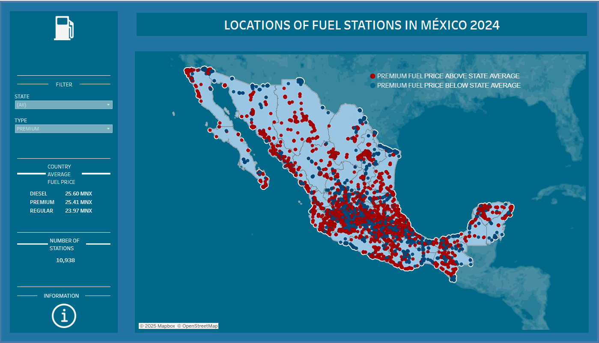

Ricardo Félix Díaz López
Portfolio
Reservoir Engineer and Data Analyst well-versed in Excel, Python, SQL,Tableau and PowerBI.

An automated reporting system that generates professional production forecasts for oil and gas wells in British Columbia. This project downloads public production data, processes it, creates forecasts using statistical models, and generates comprehensive PDF reports

This project present a interactive dashboard in Tableau to analyze fuel stations across Mexico,highlighting those that sold fuel above the average state price. For an extra explanation feel free to read my article on LinkedIn
Check the visualization at Tableau
This project uses data from the BC Energy Regulator to create a structured database in
PostgreSQL. The data was transformed and cleaned using Power Query, and an Exploratory Data
Analysis (EDA) was conducted to extract insights related to oil production.
For an extra explanation feel free to read my article on LinkedIn
Check the visualization at Tableau
In this project, it is generate a graph depicting the gas compressibility factor (z), aiming
to
replicate the z plot presented in (Craft & Howkins, 1991).
This involves employing the Dranchuk and Abou-Kassem correlation and implementing the secant
method for accurate results.
For an extra explanation feel free to read my article on LinkedIn
The purpose of this project is to offer a Python-based solution for calculating the properties of
gas in an oil reservoir. I developed this project with the intention of assisting Petroleum
Engineering students who are delving into the fascinating realm of reservoir engineering, which
involves techniques akin to those used by data analysts.
The project involved using data uploaded by Fitbit Fitness to answer key questions, such as
trends in the usage of smart devices and how to apply these usage trends to Bellabeat's
customers. The data was cleaned using pandas, and the initial hypothesis suggests that people
with higher step counts tend to have healthier habits.